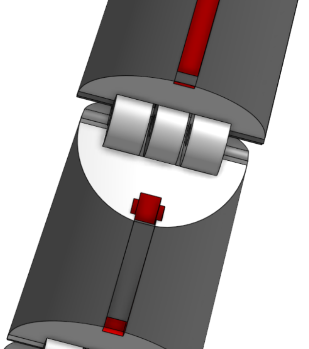
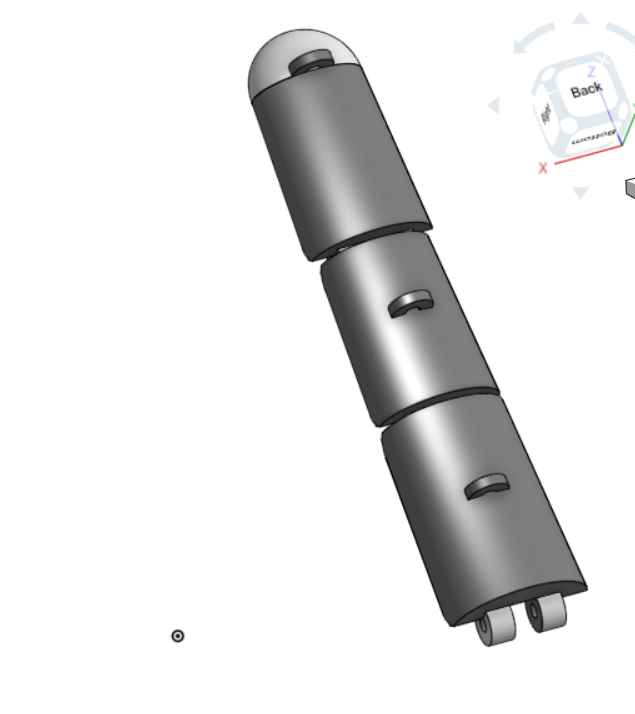
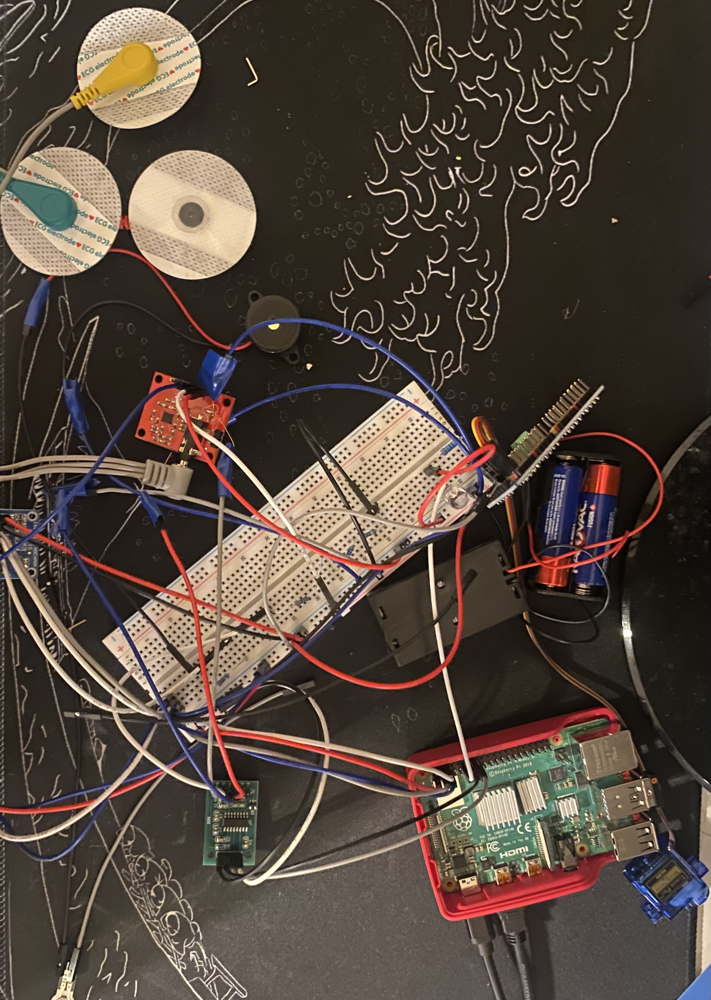

V3
Sept 21, 2026 — Week 1
Redesigning the CAD for looser joints
I began by redesigning the CAD to fix the problems from the Version 3 intro:
looser joints, a new thumb piece built around a large cylinder for the
attachment point, moving parts for the ring finger and pinky
(inspired by this 3D-printed robotic hand),
and holes to route elastic string through so nothing needs to be glued on anymore.


I also ordered more pressure sensors, a second ADS1115 to read them, and
higher-torque servos, then cut the wrist down to about five inches to stop
it from being so failure-prone.
Goals for next week
- Print the new version of the hand
- Attach the high-torque servos
- Order more jumper cables and plan how to route them to the hand
- Secure the servos with screws instead of glue
Read the full log entry ↗
V3
Sept 21, 2026 — Introduction
What's wrong with Version 3
Version 3 moved, but not well. The joints were designed too tight, so the
hand didn't always close. The servos were too weak for the arm and wrist and
snapped off. The wrist was too long, which made the whole thing fragile.
And everything was hot-glued or superglued together — low durability, and it
looked exactly like that.
Goals for this version
- Create looser joints
- Fit the electronics onto the hand itself
- Secure parts without relying on glue
- Make an arm that actually looks finished
Read the full log entry ↗
V2
May 9, 2026 — Version 2
Taking it seriously
With Version 1 I wasn't trying too hard — just get a hand that moves. After
getting obsessed with the project, I decided to take it further over the
summer: a redesigned hand with a real thumb piece, printed as one three-layer
part instead of separate pieces, with holes for fishing line and elastic
string instead of rubber bands.
I assembled the hand using filament for the joints, which worked far better
than glue. The elastic-string holes came out too small, so I drilled the
fingers to fit — then found the elastic wasn't strong enough alone, so I
hot-glued two more strands to each finger.
For electronics, I wanted something different from typical EMG-controlled
builds, so I used pressure sensors instead — plus an MPU6050 accelerometer
and strain gauges to build an artificial pain system that flags movements
that are too fast or too much strain on the pipes. Everything got soldered
and assembled onto a breadboard.

.jpeg)

Getting the arm and wrist to move meant designing a wrist piece that spins
around the wrist pipe, plus gears for up-and-down motion at both joints.
Finally, I wrote the control code to read pressure and move fingers
accordingly, with a warning trigger for excess strain or acceleration.
Parts added this version
Jumper wires (female)
Header pins
ADS1115
HX711
LED
Breadboard
Filament
MPU6050
Strain gauges
Pressure sensors
Read the full log entry ↗
V1
Oct 9, 2025 — Version 1
Where it started
This project began as an Independent Study assignment for English class —
pick a project, work on it for a few months, present it in April. I wanted
to build something engineering-related that could actually help people, so
I decided to build an affordable prosthetic arm using inexpensive
electronics, 3D-printed parts, and materials I could easily get.
I started by researching how current prosthetics work, how ancient
structures like the Pantheon stayed standing for so long (for finger
design), what prosthetics typically cost, and which materials would work.
From there I sketched a prototype, then built a skeleton out of galvanized
steel pipes, nuts, and bolts.
I then modeled it properly in CAD, adding a rib and an outer casing layer —
a nod to the Pantheon — for extra strength
(Onshape design here).
After printing it, my first attempt at the joints used nails, which cracked
the parts — so I switched to gluing them together with rubber bands instead.
Finally, I wired a PCA9685 servo driver to a Raspberry Pi 4, programmed it
in Thonny, and attached the hand to the arm. I put together a presentation
on the whole build to wrap up the version.
Parts used
Fishing line
PCA9685 servo driver
Straws
Hot glue
Nylon bushings
Nuts & bolts
Raspberry Pi 4
Batteries + holder
Mini servos
Read the full log entry ↗